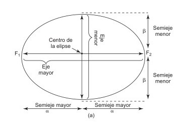
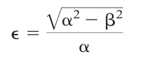
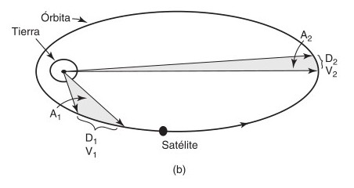
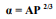
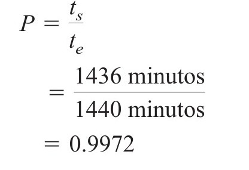
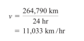
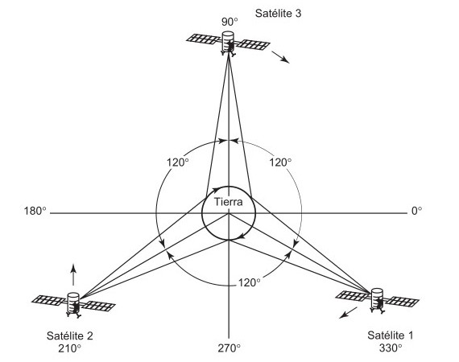
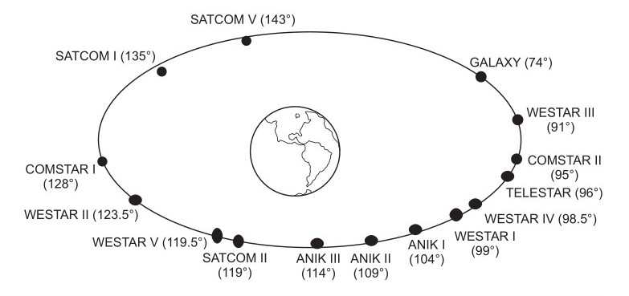

Capitulo 18 - Comuncaciones satelitales
Historia de los satelites
Inicia con un satélite de tipo reflector pasivo que consiste en rebotar señales de un lugar a otro. La Luna es un satélite natural de la Tierra, visible por reflexión de la luz solar, y que tiene una órbita ligeramente elíptica. En consecuencia, la Luna fue el primer satélite pasivo en 1954, cuando la Marina de E. U. A, transmitió bien el primer mensaje por este sistema de comunicaciones de la Tierra a la Luna y a la Tierra. En 1956 se estableció un sistema de repetidoras entre Washington, D. Sin embargo, al paso del tiempo, se vio que la Luna es un satélite de comunicaciones incómodo y no confiable, porque sólo está sobre el horizonte la mitad del tiempo, y su posición respecto a la Tierra cambia en forma constante
Una ventaja obvia de los satélites pasivos es que no requieren equipos electrónicos complicados a bordo, aunque no necesariamente carezcan de energía. Otra desventaja de los satélites pasivos es su uso ineficiente de la potencia transmitida.
En 1957, Rusia lanzó el Sputnik I, el primer satélite terrestre activo. Después, el mismo año, Estados Unidos lanzó el Explorer I, que transmitió información de telemetría durante casi cinco meses mientras que el Sputnik I realizo un transmisión información por 21 días.
La NASA lanzó el Score, en 1958, un satélite cónico de 150 lb este fue el primer satélite artificial en usarse para retransmitir comunicaciones terrestres. Era un satélite repetidor con retardo, porque recibía transmisiones de estaciones terrestres, las guardaba en cinta magnética, y a continuación las reemitía después hacia estaciones terrestres, más adelante en su órbita.
También la NASA, en conjunto con Bell Telephone Laboratories y el Jet Propulsion Laboratory lanzaron Echo en 1960, un globo de plástico de 100 pies de diámetro, con recubrimiento de aluminio. Echo reflejaba en forma pasiva las señales que recibía de grandes antenas de la estación terrestre. Echo Era sencillo y confiable, pero su desventaja era que requería transmisores de potencia extremadamente alta en las estaciones terrestres. También en 1960, el Departamento de la Defensa de E. A., lanzó Courier, que fue el primer satélite del tipo de transpondedor.
En 1962, AT&T lanzó Telstar I, el primer satélite activo en recibir y transmitir señales de radio en forma simultánea. El equipo electrónico de Telstar I se dañó con la radiación de los recién descubiertos cinturones de Van Allen y, en consecuencia, sólo duró unas pocas semanas. Para el año 1963 fue lanzado Telstar II, con éxito, y era idéntico, electrónicamente, al Telstar I, pero más resistente a la radiación. Con este satélite se lograron transmisiones por tv, telefónica, de datos y se logró transmitir bien la primera transmisión trasatlántica de video.
El Syncom I se lanzó en febrero de 1963, y fue el primer intento de colocar en órbita un satélite geosincrónico. Sin embargo los que fueron lanzados con éxitos son el Syncom II y el Syncom III en febrero de 1963 y en agosto de 1964, respectivamente. Con la transmisión de los Juegos Olímpico en Tokio 1964 gracias al uso del satélite Syncom II se demuestra la factibilidad de usar satélites geosincronos.
A partir del satélite Syncom hay empresas que proporcionan circuitos mundiales, telefónicos y de datos, de portadora común fija, emisión de televisión de punto a punto, distribución de red de televisión, emisión de música, servicio de teléfono móvil, servicio de navegación y redes privadas de comunicaciones para grandes corporaciones, agencias gubernamentales y aplicaciones militares, gracias a los satélites que las empresas privadas han lanzado.
Fue lanzado de Cabo Kennedy en 1965, y usó dos transpondedores y un ancho de banda de 25 MHz, para conducir en forma simultánea una señal de televisión y 480 canales de voz. Intelsat quiere decir Organización Internacional de Telecomunicaciones Satelitales. Es un consorcio de más de 120 naciones, que tiene el compromiso de proporcionar comunicaciones satelitales a nivel mundial, sin discriminación, usando cuatro categorías básicas de servicio: telefonía internacional conmutada pública, emisiones de radio y TV, redes de líneas privadas y comerciales y comunicaciones domésticas y regionales. Entre los lanzamientos más recientes de satélites de Intelsat están los vehículos espaciales de las series 500, 600, 700 y 800.
La antigua Unión Soviética lanzó el primer conjunto de satélites domésticos (Domsats) o nacionales en 1966, llamándolos Molniya, que quiere decir “relámpago”. Los Domsats son satélites que son propiedad de un solo país, que los opera y usa. La Western Union lanzó su primer satélite Westar en 1984, y la Radio Corporation of America (RCA) lanzó sus primeros Satcom (Satellite Communications) en 1975. Hoy, en Estados Unidos, una empresa de propiedad pública, llamada Communications Satellite Corporation (Comsat) reglamenta el uso y funcionamiento de los satélites estadounidenses, y también establece sus tarifas.
Leyes de kepler
Un satélite permanece en órbita porque las fuerzas centrífugas causadas por su rotación en torno a la Tierra se equilibran con la atracción gravitacional de ésta. Las leyes de Kepler se pueden enunciar en forma sencilla como sigue:
1) los planetas describen elipses con el Sol en uno de los focos.
2) la línea que une al Sol con un planeta barre áreas iguales en intervalos iguales de tiempo.
3) el cuadrado del tiempo de revolución de un planeta, dividido entre el cubo de su distancia promedio al Sol es un número igual para todos los planetas.
Las leyes de Kepler se pueden aplicar a dos cuerpos cualesquiera en el espacio que interaccionen por gravitación
La primera ley de Kepler establece que un satélite describe una órbita alrededor de un cuerpo primario (como la Tierra) siguiendo una trayectoria elíptica. Como la masa de la Tierra es mucho mayor que la del satélite, el centro de masa siempre coincide con el centro de la Tierra. Las propiedades geométricas de la elipse se suelen referir a uno de los focos, que lógicamente se selecciona como el que está en el centro de la Tierra.
Una elipse tiene dos focos, como se ve en la imagen y el centro de masa, llamado baricentro, de un sistema de dos cuerpos siempre está en uno de los focos. Como lo describe en la imagen un semieje mayor se identifica como α y un semieje menor se identifica como
La excentricidad de la elipse se define como sigue siendo є la excentricidad
Segunda ley de Kepler
La segunda ley de Kepler, enunciada en 1609 con la primera, se conoce como la ley de las áreas, y establece que para intervalos iguales de tiempo, un satélite barre áreas iguales en el plano de su órbita, con foco en el baricentro. Debido a la ley de áreas iguales, la distancia D 1 debe ser mayor que D 2 y, en consecuencia, la velocidad V 1 debe ser mayor que la velocidad V 2.
Como se ve en la imagen 2, para un satélite que recorre las distancias D 1 y D 2 metros en 1 segundo, las áreas A 1 y A 2 son iguales.
La tercera ley de Kepler, publicada en 1619, se llama a veces la ley armónica. Establece que el cuadrado del periodo (el tiempo en recorrer la órbita) es proporcional al cubo de la distancia promedio entre el primario y el satélite. Esta distancia promedio es igual al semieje mayor; por lo anterior, se puede enunciar matemáticamente la tercera ley de Kepler como sigue:

Donde:
A = constante (kilómetros)
α = semieje mayor (kilómetros)
P = días solares medios en la Tierra
P es la relación del tiempo de un día sideral (t s = 23 horas y 56 minutos) entre el tiempo de una revolución de la Tierra en torno a su eje (t e = 24 horas)
Al rearreglar la ecuación α = AP 2/3 y despejar la constante A en el caso de la Tierra, se obtiene
A = 42241.0979
Las ecuaciones 1 y 2 se aplican al caso ideal, cuando un satélite gira en torno a un cuerpo perfectamente esférico, sin fuerzas exteriores. Los satélites con órbita cercana a la Tierra quedan afectados por la resistencia atmosférica y por el campo magnético terrestre. Sin embargo, para los satélites más alejados, las principales fuerzas perturbadoras son los campos gravitacionales del Sol y de la Luna.
SATELITES GEOESTACIONARIOS
Los satélites geosíncronos (llamados también estacionarios o geoestacionarios) parecen
estar en un lugar fijo sobre un punto en la superficie terrestre. Un solo satélite
geosíncrono de gran altitud puede proporcionar comunicaciones confiables
aproximadamente a un 40% la superficie terrestre.
Los satélites permanecen en órbita como resultado del equilibrio entre las fuerzas
centrífuga y gravitacional. Si un satélite viaja a demasiada velocidad, su fuerza
centrífuga supera a la de la gravedad de la Tierra, y el satélite se sale de órbita y escapa
al espacio. Amenores velocidades, la fuerza centrífuga del satélite no es suficiente, y la
gravedad tiende a atraer al vehículo hacia la Tierra.
Mientras más cerca de la Tierra gira un satélite, la fuerza gravitacional es mayor, y la
velocidad necesaria para evitar que caiga a Tierra es mayor. Los satélites de órbita
terrestre de altura intermedia tienen un periodo de rotación de 5 a 12 horas y
permanecen en la línea de vista de determinada estación terrestre entre 2 y 4 horas por
órbita. Los satélites terrestres de gran altitud, en órbitas geosíncronas, se mueven a unas
6840 millas por hora, y completan una revolución en torno a la Tierra en unas 24 horas.
Sólo hay una órbita geosíncrona terrestre; sin embargo, está ocupada por gran cantidad de
satélites. En el caso ideal, los satélites geosíncronos deberían permanecer estacionarios
sobre el lugar elegido sobre el ecuador, en una órbita ecuatorial; Por lo anterior, estas
fuerzas no compensadas hacen que los satélites geosíncronos se aparten en forma gradual
de sus lugares asignados, describiendo un ocho con un periodo de 24 horas, que sigue una
trayectoria errante un poco arriba y abajo del plano ecuatorial. En esencia, se presenta en
una clase especial de órbita inclinada, que a veces se llama órbita inclinada estacionaria.
Hay varios requisitos para los satélites en órbitas geoestacionarias.
- La primera y más obvia es que deben tener un ángulo de inclinación de 0° (es decir, que el satélite debe estar en órbita directamente en el plano ecuatorial de la Tierra).
- El satélite también debe recorrer su órbita en la misma dirección que la rotación de la Tierra (hacia el este, hacia el sol naciente), con la misma velocidad angular (de rotación): una revolución por día.
El semieje mayor de una órbita terrestre geosíncrona es el radio de la órbita medido del geocentro terrestre al vehículo satelital. Al aplicar la tercera ley de Kepler, en la ecuación 2, con A = 42241.0979 y P = 0.9972, el semieje mayor es:

Por lo que, los satélites en órbita geosíncrona giran en círculo directamente arriba del ecuador, a 42,164 km del centro de la Tierra. Como el radio ecuatorial aproximado de la Tierra es de 6378 km, la altura sobre el nivel medio del mar (h) de un satélite en órbita geosíncrona es:
h = 42,164 km - 6378 km
h = 35,768 km Lo que sería igual a 22,300 millas sobre la superficie terrestre.
Velocidad orbital de un satélite geosíncrono
La circunferencia C de una órbita geosíncrona es
C = 2π(42,164 km) = 264,790 km
Entonces, la velocidad tangencial o rectilínea v del satélite geosíncrono es
Tiempo de retardo por viaje redondo para los satélites geosíncronos
Para calcular el retardo de propagación por recorrido de ida y vuelta, entre un satélite y una estación terrestre directamente abajo de él es

Si se incluyen los retardos en los equipos de estación terrestre y del satélite, se necesita más de un cuarto de segundo para que una onda electromagnética vaya de una estación terrestre a un satélite, y regrese, cuando la estación está directamente abajo del satélite.
Órbita de Clarke
A veces, a una órbita terrestre geosíncrona se le llama órbita de Clarke, o cinturón de Clarke, en honor de Arthur C. La órbita de Clarke cumple con el conciso conjunto de especificaciones de órbitas de satélites geosíncronos: 1) estar directamente arriba del ecuador, 2) viajar en la misma dirección que la de rotación de la Tierra, a 6840 millas por hora, 3) tener 22,300 millas de altura sobre la Tierra, y 4) describir una revolución cada 24 horas.
En esta imagen se puede ver tres satélites en órbitas de Clarke, a 120° de longitud uno de otro, pueden proporcionar comunicaciones en todo el globo terrestre, excepto en las regiones polares.
Al principio, por un acuerdo internacional, todos los satélites colocados en la órbita de Clarke deberían estar separados por cuando menos 1833 millas. Esta estipulación equivale a una separación angular de 4° o más, con lo que se limita la cantidad de vehículos satelitales en órbita geosíncrona a menos de 100. Hoy en dia los acuerdos internacionales permiten que los satélites se coloquen mucho más cerca, entre sí.
En la anterior figura (imagen 2) se pueden ver los lugares de varios satélites en órbita geosíncrona.
Ventajas y desventajas de los satélites geosíncronos
Ventajas
- Los satélites geosíncronos permanecen casi estacionarios con respecto a una determinada estación terrestre, gracias a esto no se necesitan equipos de rastreas loas cuales son costosos.
- La sombra de un satélite geosíncronos abarca todas las estaciones terrestres que tienen una trayectoria visual hacia ellos, y que quedan dentro de la distribución de radiación de las antenas del satélite.
- No hay necesidad de cambiar de uno a otro satélite geosíncrono porque pasen por su respectiva órbita.
- Son despreciables los efectos del desplazamiento Doppler. Por lo que la longitud de onda y la frecuencia recibidas son iguales a las emitidas.
Desventajas
- . Los satélites geosíncronos requieren a bordo dispositivos complicados y pesados de propulsión, para mantenerlos en órbita fija.
- Los satélites geosíncronos están a gran altura e introducen retardos de propagación muchos mayores. El retardo de propagación de ida y vuelta entre dos estaciones terrestres, pasando por un satélite geosíncrono, es de 500 a 600 ms.
- . Los satélites geosíncronos requieren mayores potencias de transmisión y receptores más sensibles, por las mayores distancias y mayores pérdidas en la trayectoria.
- Se requieren artificios espaciales de gran precisión para poner en órbita un satélite geosíncrono, y para mantenerlo en ella.